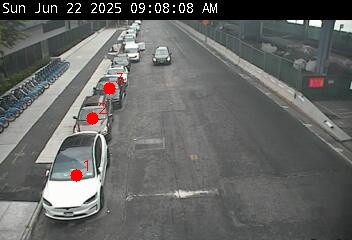

<!DOCTYPE html>
<html>
<head>
    
    <meta http-equiv="content-type" content="text/html; charset=UTF-8" />
    <script src="https://cdn.jsdelivr.net/npm/leaflet@1.9.3/dist/leaflet.js"></script>
    <script src="https://code.jquery.com/jquery-3.7.1.min.js"></script>
    <script src="https://cdn.jsdelivr.net/npm/bootstrap@5.2.2/dist/js/bootstrap.bundle.min.js"></script>
    <script src="https://cdnjs.cloudflare.com/ajax/libs/Leaflet.awesome-markers/2.0.2/leaflet.awesome-markers.js"></script>
    <link rel="stylesheet" href="https://cdn.jsdelivr.net/npm/leaflet@1.9.3/dist/leaflet.css"/>
    <link rel="stylesheet" href="https://cdn.jsdelivr.net/npm/bootstrap@5.2.2/dist/css/bootstrap.min.css"/>
    <link rel="stylesheet" href="https://netdna.bootstrapcdn.com/bootstrap/3.0.0/css/bootstrap-glyphicons.css"/>
    <link rel="stylesheet" href="https://cdn.jsdelivr.net/npm/@fortawesome/fontawesome-free@6.2.0/css/all.min.css"/>
    <link rel="stylesheet" href="https://cdnjs.cloudflare.com/ajax/libs/Leaflet.awesome-markers/2.0.2/leaflet.awesome-markers.css"/>
    <link rel="stylesheet" href="https://cdn.jsdelivr.net/gh/python-visualization/folium/folium/templates/leaflet.awesome.rotate.min.css"/>
    
            <meta name="viewport" content="width=device-width,
                initial-scale=1.0, maximum-scale=1.0, user-scalable=no" />
            <style>
                #map_aa39bfd6224bdff8ff5511010f75d4b6 {
                    position: relative;
                    width: 100.0%;
                    height: 100.0%;
                    left: 0.0%;
                    top: 0.0%;
                }
                .leaflet-container { font-size: 1rem; }
            </style>

            <style>html, body {
                width: 100%;
                height: 100%;
                margin: 0;
                padding: 0;
            }
            </style>

            <style>#map {
                position:absolute;
                top:0;
                bottom:0;
                right:0;
                left:0;
                }
            </style>

            <script>
                L_NO_TOUCH = false;
                L_DISABLE_3D = false;
            </script>

        
</head>
<body>
    
    
            <div class="folium-map" id="map_aa39bfd6224bdff8ff5511010f75d4b6" ></div>
        
</body>
<script>
    
    
            var map_aa39bfd6224bdff8ff5511010f75d4b6 = L.map(
                "map_aa39bfd6224bdff8ff5511010f75d4b6",
                {
                    center: [40.71381222599225, -73.99646615844584],
                    crs: L.CRS.EPSG3857,
                    ...{
  "zoom": 13,
  "zoomControl": true,
  "preferCanvas": false,
}

                }
            );

            

        
    
            var tile_layer_c58c77d679bddbea0c6bbefdae7338fa = L.tileLayer(
                "https://{s}.basemaps.cartocdn.com/light_all/{z}/{x}/{y}{r}.png",
                {
  "minZoom": 0,
  "maxZoom": 20,
  "maxNativeZoom": 20,
  "noWrap": false,
  "attribution": "\u0026copy; \u003ca href=\"https://www.openstreetmap.org/copyright\"\u003eOpenStreetMap\u003c/a\u003e contributors \u0026copy; \u003ca href=\"https://carto.com/attributions\"\u003eCARTO\u003c/a\u003e",
  "subdomains": "abcd",
  "detectRetina": false,
  "tms": false,
  "opacity": 1,
}

            );
        
    
            tile_layer_c58c77d679bddbea0c6bbefdae7338fa.addTo(map_aa39bfd6224bdff8ff5511010f75d4b6);
        
    
            var marker_00f1492c618f677b6167ac2c63ebe053 = L.marker(
                [40.715157, -74.00213],
                {
}
            ).addTo(map_aa39bfd6224bdff8ff5511010f75d4b6);
        
    
            var icon_2b89a84b1fa237d7951ce1f052b9a332 = L.AwesomeMarkers.icon(
                {
  "markerColor": "red",
  "iconColor": "white",
  "icon": "camera",
  "prefix": "fa",
  "extraClasses": "fa-rotate-0",
}
            );
        
    
        var popup_ff970004877f374942da932c370b66bf = L.popup({
  "maxWidth": 320,
});

        
            
                var html_8401b237b2d4b51ac5325b8f401c2632 = $(`<div id="html_8401b237b2d4b51ac5325b8f401c2632" style="width: 100.0%; height: 100.0%;">     <strong>Worth St @ Centre St</strong><br>     0 Open / 3 Spots<br>          </div>`)[0];
                popup_ff970004877f374942da932c370b66bf.setContent(html_8401b237b2d4b51ac5325b8f401c2632);
            
        

        marker_00f1492c618f677b6167ac2c63ebe053.bindPopup(popup_ff970004877f374942da932c370b66bf)
        ;

        
    
    
                marker_00f1492c618f677b6167ac2c63ebe053.setIcon(icon_2b89a84b1fa237d7951ce1f052b9a332);
            
    
            var marker_4e7e35ece0101adf0959e3de82b8cb8c = L.marker(
                [40.715579, -74.003036],
                {
}
            ).addTo(map_aa39bfd6224bdff8ff5511010f75d4b6);
        
    
            var icon_f6e9d7718b302843c9d525c3f4d6cc9c = L.AwesomeMarkers.icon(
                {
  "markerColor": "green",
  "iconColor": "white",
  "icon": "camera",
  "prefix": "fa",
  "extraClasses": "fa-rotate-0",
}
            );
        
    
        var popup_0fc7849faec4cf7cc8b5ac94120193bf = L.popup({
  "maxWidth": 320,
});

        
            
                var html_0fdf6829a9c898608b1bfde4dcacfca7 = $(`<div id="html_0fdf6829a9c898608b1bfde4dcacfca7" style="width: 100.0%; height: 100.0%;">     <strong>Worth Street @ Lafayette Street</strong><br>     1 Open / 5 Spots<br>          </div>`)[0];
                popup_0fc7849faec4cf7cc8b5ac94120193bf.setContent(html_0fdf6829a9c898608b1bfde4dcacfca7);
            
        

        marker_4e7e35ece0101adf0959e3de82b8cb8c.bindPopup(popup_0fc7849faec4cf7cc8b5ac94120193bf)
        ;

        
    
    
                marker_4e7e35ece0101adf0959e3de82b8cb8c.setIcon(icon_f6e9d7718b302843c9d525c3f4d6cc9c);
            
    
            var marker_c753b0b69b9b72bf432d8d02dc427f57 = L.marker(
                [40.709853, -73.991746],
                {
}
            ).addTo(map_aa39bfd6224bdff8ff5511010f75d4b6);
        
    
            var icon_e8043b43e4e384595126eadc10b2b9b5 = L.AwesomeMarkers.icon(
                {
  "markerColor": "red",
  "iconColor": "white",
  "icon": "camera",
  "prefix": "fa",
  "extraClasses": "fa-rotate-0",
}
            );
        
    
        var popup_78f9074e292e9b8ee196433315fb6506 = L.popup({
  "maxWidth": 320,
});

        
            
                var html_63b244a38d48c0a53fae5d879d5e5501 = $(`<div id="html_63b244a38d48c0a53fae5d879d5e5501" style="width: 100.0%; height: 100.0%;">     <strong>South Street @ Pike Street</strong><br>     0 Open / 3 Spots<br>          </div>`)[0];
                popup_78f9074e292e9b8ee196433315fb6506.setContent(html_63b244a38d48c0a53fae5d879d5e5501);
            
        

        marker_c753b0b69b9b72bf432d8d02dc427f57.bindPopup(popup_78f9074e292e9b8ee196433315fb6506)
        ;

        
    
    
                marker_c753b0b69b9b72bf432d8d02dc427f57.setIcon(icon_e8043b43e4e384595126eadc10b2b9b5);
            
    
            var marker_95d4b459ab54282a12137e6d5f3e81da = L.marker(
                [40.716723, -73.989158],
                {
}
            ).addTo(map_aa39bfd6224bdff8ff5511010f75d4b6);
        
    
            var icon_9d74fa49a4112ff796a8a2e1cfe31cab = L.AwesomeMarkers.icon(
                {
  "markerColor": "red",
  "iconColor": "white",
  "icon": "camera",
  "prefix": "fa",
  "extraClasses": "fa-rotate-0",
}
            );
        
    
        var popup_47bda005a6f90a83d1b42eb79fe4a1d1 = L.popup({
  "maxWidth": 320,
});

        
            
                var html_e2df09a1cfdbd98b491e626bbbf2a72f = $(`<div id="html_e2df09a1cfdbd98b491e626bbbf2a72f" style="width: 100.0%; height: 100.0%;">     <strong>Grand St @ Essex St</strong><br>     0 Open / 2 Spots<br>          </div>`)[0];
                popup_47bda005a6f90a83d1b42eb79fe4a1d1.setContent(html_e2df09a1cfdbd98b491e626bbbf2a72f);
            
        

        marker_95d4b459ab54282a12137e6d5f3e81da.bindPopup(popup_47bda005a6f90a83d1b42eb79fe4a1d1)
        ;

        
    
    
                marker_95d4b459ab54282a12137e6d5f3e81da.setIcon(icon_9d74fa49a4112ff796a8a2e1cfe31cab);
            
    
            var marker_c8c9c1372f623f344ada7b01aecad9cb = L.marker(
                [40.7104751559999, -74.0002155303955],
                {
}
            ).addTo(map_aa39bfd6224bdff8ff5511010f75d4b6);
        
    
            var icon_25f3ccd91fc58f4e31ead7f002471993 = L.AwesomeMarkers.icon(
                {
  "markerColor": "red",
  "iconColor": "white",
  "icon": "camera",
  "prefix": "fa",
  "extraClasses": "fa-rotate-0",
}
            );
        
    
        var popup_d6b06a8e692dd732a36d032efb8b299e = L.popup({
  "maxWidth": 320,
});

        
            
                var html_40533574493dbb44ae5bc2914469ce7f = $(`<div id="html_40533574493dbb44ae5bc2914469ce7f" style="width: 100.0%; height: 100.0%;">     <strong>Pearl Street @ St. James Pl</strong><br>     0 Open / 7 Spots<br>          </div>`)[0];
                popup_d6b06a8e692dd732a36d032efb8b299e.setContent(html_40533574493dbb44ae5bc2914469ce7f);
            
        

        marker_c8c9c1372f623f344ada7b01aecad9cb.bindPopup(popup_d6b06a8e692dd732a36d032efb8b299e)
        ;

        
    
    
                marker_c8c9c1372f623f344ada7b01aecad9cb.setIcon(icon_25f3ccd91fc58f4e31ead7f002471993);
            
    
            var marker_2217322736faf723d740041187e05d3b = L.marker(
                [40.7150861999536, -73.9925114202795],
                {
}
            ).addTo(map_aa39bfd6224bdff8ff5511010f75d4b6);
        
    
            var icon_2d704dd93497bf889ed284649ab96b6a = L.AwesomeMarkers.icon(
                {
  "markerColor": "green",
  "iconColor": "white",
  "icon": "camera",
  "prefix": "fa",
  "extraClasses": "fa-rotate-0",
}
            );
        
    
        var popup_ab39c283cc8a0583c4e719b39eb39ad8 = L.popup({
  "maxWidth": 320,
});

        
            
                var html_52f8a9742ef077c7201b87ca0086acc5 = $(`<div id="html_52f8a9742ef077c7201b87ca0086acc5" style="width: 100.0%; height: 100.0%;">     <strong>Canal Street @ Allen Street</strong><br>     1 Open / 3 Spots<br>          </div>`)[0];
                popup_ab39c283cc8a0583c4e719b39eb39ad8.setContent(html_52f8a9742ef077c7201b87ca0086acc5);
            
        

        marker_2217322736faf723d740041187e05d3b.bindPopup(popup_ab39c283cc8a0583c4e719b39eb39ad8)
        ;

        
    
    
                marker_2217322736faf723d740041187e05d3b.setIcon(icon_2d704dd93497bf889ed284649ab96b6a);
            var church_marker = L.marker(
    [40.716970062971434, -73.99693923349486]
).addTo(map_aa39bfd6224bdff8ff5511010f75d4b6);

var church_icon = L.AwesomeMarkers.icon({
    markerColor: "purple",  // make it stand out
    iconColor: "white",
    icon: "place-of-worship",  // icon for a church
    prefix: "fa"
});

var church_popup = L.popup({
    maxWidth: 320
}).setContent(`
    <strong>耶穌基督後期聖徒教會</strong><br>
    41 Elizabeth St, New York, NY 10013
`);

church_marker.setIcon(church_icon).bindPopup(church_popup);

</script>
</html>